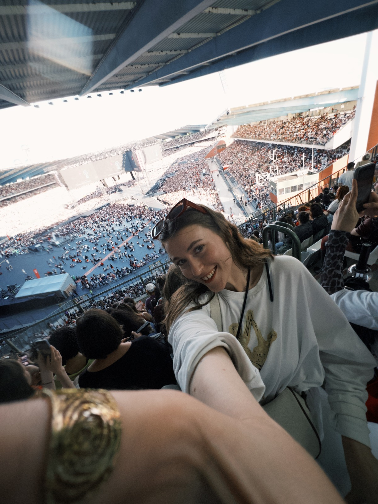
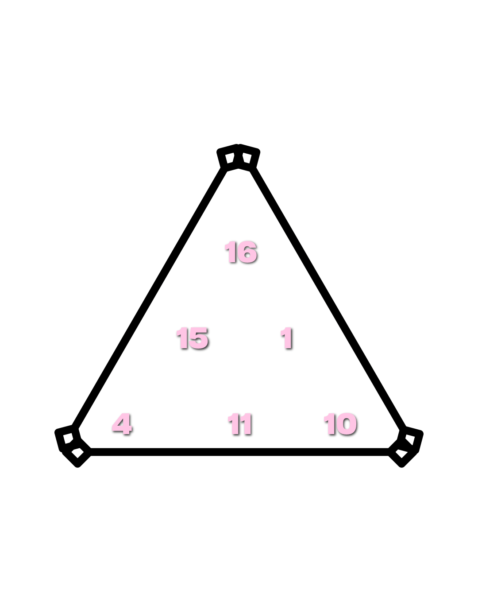

✳ АЛЕКСА MOS · АСТРОНУМЕРОЛОГ
Ближче до себе.
Вільніше
у своїх діях.
Самопізнання через нумерологію.
Індивідуальна робота з мисленням.
Самопізнання має сенс,
коли стає дією.
Розбір — початок розмови про себе.
Менторство — простір для практичної роботи.
Оберіть формат, який відгукується саме зараз.
01 / ФОРМАТИ РОБОТИ
З чого почнемо?
Один запит. Ваш власний маршрут.
Усі формати й умови — нижче.
Трикутник Долі
Характер, призначення, внутрішні опори.
Сумісність партнерів
Потреби, взаємодія та сценарії стосунків.
Матриця Долі
Розгорнутий авторський погляд на сфери життя.
Персональне менторство
Індивідуальна робота з вашим запитом.
Секретний продукт · Авторські матеріали

02 / ПРО МЕНЕ
Алекса Mos.
Поруч на шляху
до себе.
Астронумеролог і ментор з мислення та самопізнання.
Мій підхід поєднує авторське прочитання коду народження та практичну роботу з вашим запитом.
Моя історія та підхід ↓03 / ПЕРСОНАЛЬНЕ МЕНТОРСТВО
Ваш темп.
Ваша глибина.
Від знайомства до тривалого супроводу.
Попередній розбір у месенджері безкоштовний.
Знайомство
30–40 хвилин
400 грнСума зараховується у вартість пакету.
Умови пакету ↗02Точковий розбір
60 хвилин
700 грнОдин конкретний запит, 1–2 техніки.
Умови пакету ↗03Глибоке опрацювання
120 хвилин
1300 грнПрактики на сесії та 3 дні підтримки.
Умови пакету ↗041 місяць
4 сесії + супровід
2500 грнЩотижнева індивідуальна робота.
Умови пакету ↗052 місяці
8 сесій + супровід
4800 грнПрактики, завдання та супровід.
Умови пакету ↗063 місяці
12 сесій + супровід
6900 грнПрограма та супровід у месенджері.
Умови пакету ↗400 грн за вступну сесію зараховуються у вартість пакету менторства. Повні формати, умови оплати й скасування збережено дослівно в описах нижче.
04 / БЕЗ ДРІБНОГО ШРИФТУ
Усі деталі.
До вашого рішення.
Повні оригінальні описи, формати,
ціни, оплата та умови бронювання.
01Про нумерологію та про мене
Оригінальний опис авторки · наведено дослівно
Знайомство
Hi, I'm aleksa mos.
АСТРОНУМЕРОЛОГ & МЕНТОР З МИСЛЕННЯ ТА САМОПІЗНАННЯ
ТУТ РОБОТА З МИСЛЕННЯМ ЧЕРЕЗ НУМЕРОЛОГІЮ
записатися на консультацію
Мій підхід
Допоможу розкрити твій потенціал, знайти внутрішні опори та покроково змінити життя через код народження й роботу з мисленням
Нумерологія та дії
Астронумерологія — це не про магію чи чарівні пігулки
Це інструкція до твого життя!
Але головне — це конкретні дії, які потрібно зробити для результату
Твій код народження показує домінуючі енергії, сильні сторони та приховані блоки
Просте прочитання розшифровки не змінить твоє життя за один день
Мій шлях
Я сама пройшла шлях від невизначеності до життя, де мої найамбітніші мрії здійснюються
І я знаю, як перетворити знання про себе на реальні зміни у будь-якій сфері
Моя роль
Я тут для того, щоб стати твоїм провідником і допомогти тобі вийти на новий рівень без зайвих помилок
Формати роботи
Трикутник Долі
сумісність партнерів
Матриця долі
Персональне менторство
секретний продукт
Авторські матеріали
тисни на кружечок, щоб побачити деталі
Контакти
соціальні мережі
02Трикутник Долі1300 грн

Оригінальний опис авторки · наведено дослівно
Для кого цей розбір
Цей розбір необхідний вам, якщо ви:
Біжите по колу та вигораєте
робите 1000 дій на день, а бажаного фінансового чи особистого результату немає
Розшифрування “Трикутник Долі”
Відчуваєте себе не на своєму місці
є стійке відчуття, що ваш потенціал зливається, а реалізація поруч, але ви не розумієте, куди саме ступити
Спеціально чи несвідомо стаєте собі ворогом
бачите свої помилки у стосунках чи фінансах, але знову й знову наступаєте на ті самі граблі
Застрягли в синдромі самозванця
постійно сумніваєтеся: «Чи туди я йду? Чи маю я право вимагати більшого від життя?»
Що ви отримаєте
Що ви отримаєте та про що дізнаєтеся на розборі?
Очікувані результати за описом авторки
Ви отримаєте чітку карту свого внутрішнього світу та дорожній план дій. Нарешті зникнуть невизначеність і фонова тривога
Ви зрозумієте, що з вами все окей. Просто раніше ви тиснули на гальма замість газу
Побачите несвідомі патерни, через які ви самостійно зливаєте гроші, стосунки та здоров'я (наприклад: гіперконтроль, синдром рятувальника чи страх сказати «ні»)
Зрозумієте, де саме ви непомітно втрачаєте ресурс, і дізнаєтеся свій “архетип дій” — через яку поведінку до вас гроші йдуть легко і без вигорання
Ваші «дивацтва» або «складний характер» — це не дефекти, а приховані суперсили, якими ви просто не вміли користуватися
Ви йдете не просто з розумінням «яка я», а з покроковим алгоритмом дій — що конкретно зробити вже завтра, щоб вийти із застою
Формат
Формат:
PDF-файл з детальним трактуванням (50 - 70 сторінок)
голосові пояснення
Зони розбору
зони, які розглядаємо:
аналіз 6 базових енергій, які визначають твій характер та життєвий шлях
розберемо, які енергії працюють у «плюсі» (дають ресурс), а які в «мінусі» чи «гіпері» (блокують розвиток)
головне число життя та призначення, основний вектор руху та глибинний сенс втілення
через які сфери та дії ти можеш максимально розкрити свої таланти та заробляти гроші
чітке розуміння того, що саме заважає твоїм енергіям розвиватися і де відбувається «витік» ресурсу
отримаєш конкретну інструкцію та завдання, як вивести свої енергії в «плюс» та почати жити у відповідності до свого коду
Оплата, строки та скасування
прайс
100% оплата — бронювання замовлення
Ціна: 1300 грн
Можлива оплата 50/50:
50% — бронювання
50% — вноситься в день отримання розшифровки (або коли у вас буде можливість внести другу частину)
Розшифровка виконується протягом 3–5-7 днів
Зверніть увагу: сума бронювання не повертається у разі скасування замовлення
Як записатися
Для запису переходьте за посиланням та пишіть:
«Привіт! Хочу розшифровку "Трикутника Долі". Моя дата народження — 06.12.2003. Ось чек про оплату»
03Сумісність партнерів1672 грн
Оригінальний опис авторки · наведено дослівно
Що покаже розбір
Що покаже цей розбір:
Глибинні причини конфліктів
Ви зрозумієте, чому виникають непорозуміння, і навчитеся вирішувати їх ще на початковому етапі, не доводячи до піку сварки
Розшифрування “Сумісність партнерів”
Справжні потреби (свої та партнера)
Зрозумієте, що насправді потрібно кожному з вас для щастя та який підхід піде стосункам на користь, а не на шкоду
Два сценарії розвитку
Побачите детальні перспективи вашої пари — як у позитивному, так і в негативному ключі
Конкретний антикризовий план
Отримаєте покрокову інструкцію дій для виходу в «плюс» та гармонізації союзу
Стосунки та взаємодія
Чому ви зустрілися, у чому цінність цієї зустрічі та які спільні уроки ви маєте пройти
Що ці стосунки дають жінці, а що — чоловіку на рівні енергії та ресурсів
Де детально заховані ваші основні «точки кипіння»
Як корегувати власну поведінку, щоб підтримувати баланс, налагодити взаємодію та підсилювати одне одного
Що робити, якщо стосунки пішли за негативним сценарієм, і як покроково вивести пару в гармонію
Формат
відеопояснення
Як записатися
«Привіт! Хочу розшифровку "Сумісність партнерів". Моя дата народження — 06.12.2003 (Анна). Його дата народження — 12.05.2000 (Михайло). Ось чек про оплату»
Вартість
Ціна: 1672 грн
04Матриця Долі2351 грн
Оригінальний опис авторки · наведено дослівно
Для кого цей розбір
Цей розбір необхідний вам, якщо ви впізнаєте у цих думках і ситуаціях себе. Матриця Долі допоможе знайти відповіді та рішення:
«Мене не помічають» «Я намагаюся бути хорошим для всіх, але об мене витирають ноги» «Не можу проявитися в мережах/соціумі»
Покаже твою справжню «візитну картку» для світу. Розкриє, чому соціум зчитує тебе викривлено, коли ти перебуваєш у «мінусі», і як саме це блокує твої гроші та таланти
Розшифрування “матриця Долі”
«Я постійно приймаю не ті рішення» «Слухаю порадників замість себе і втрачаю гроші/час» «Живу з постійною тривогою»
Навчить відрізняти панічний шум у голові від внутрішнього компаса та підкаже, як припинити бігати за чужою думкою і почати довіряти собі
«Чому я знову наступаю на ті самі граблі?» «Чому кожен мій бізнес/проєкт руйнується на одному й тому ж етапі?»
Викриє твої циклічні пастки та конкретний тригер, який запускає повторні невдачі. Дасть ключ, як остаточно зламати деструктивний сценарій
Родина, призначення та гроші
«Я тягну на собі вантаж всієї родини» «Відпрацьовую за батьків» «Постійне безпідставне почуття провини та боргів»
Продемонструє нав'язані чужі завдання та родинні програми, які ти несвідомо тягнеш із минулого, і проведе чітку межу: «це моє, а це — не моє»
«Навіщо я живу?» «У чому моя місія?» «Я реалізувався як мама/працівник, а далі що?»
Дасть чітку дорожню карту за твоїм призначенням: що потрібно зробити для себе, що віддати соціуму і до якого духовного підсумку ти маєш прийти
«Працюю 24/7, а грошей немає» «Дійшов до фінансової стелі» «Займаюся не своїм ділом і вигораю»
Розкриє точні сфери та дії, які вмикають твій грошовий потік, і точково покаже важелі зливу — що саме блокує твій дохід прямо зараз
Таланти, стосунки та блоки
«У мене немає ніяких суперздібностей» «Я звичайна/пересічна людина» «Синдром самозванця»
Проведе розпаковку прихованих ресурсів і покаже сильні сторони та унікальні таланти, про які ти забув(ла) або вважав(ла) їх своїми вадами
«Самотність» «Притягую тільки аб'юзерів/слабких чоловіків» «Часті скандали та непорозуміння у шлюбі»
Змалює ідеальний портрет твого партнера, підсвітить власні помилки та «мінуси», які руйнують союз, і дасть рецепт побудови гармонійних стосунків без маніпуляцій
«Я сам собі ворог» «Саботаж перед самим успіхом» «Внутрішні блоки та страх росту»
Підсвітить деструктивні підсвідомі установки та «камені спотикання», а також дасть конкретний спосіб їх нейтралізації, щоб ти перестав(ла) блокувати власний ріст
Здоров’я та енергії: авторський опис
«Постійна втома» «Хронічні хвороби, які лікарі не можуть пояснити» «Немає енергії жити»
Вкаже на чакральні пробої та проілюструє, яке саме емоційне чи енергетичне вигорання б'є по конкретних органах і фізичному здоров'ю
«Відчуваю в собі потенціал, але боюся його» «Незрозумілі збіги» «Хочу впливати на своє життя, але не знаю як»
Розкриє рівень твоєї внутрішньої сили та покаже точний напрямок її застосування (через слово, творчість, зцілення чи аналітику)
«Страх невідомості» «Не можу правильно спланувати рік» «Постійно роблю дії не вчасно»
Стане персональним навігатором по періодах і підкаже, коли варто запускати масштабні проєкти, коли — відпочивати, а коли — навчатися
Формат
PDF-файл з детальним трактуванням (80 - 100 сторінок)
Зони розбору: авторський опис
КАНАЛ ПРОЯВУ — ГОЛОВНА ЕНЕРГІЯ
КАНАЛ ПОДІЙ, ЩО ПОВТОРЮВАЛИСЯ
КАНАЛ ІНТУЇЦІЇ
КАНАЛ КАРМІЧНОГО ВІДПРАЦЮВАННЯ
РОДОВІ КАРМІЧНІ ЗАВДАННЯ
КАНАЛ ГРОШЕЙ - ПРОФЕСІЇ АКТИВАЦІЯ ГРОШОВОГО КАНАЛУ БЛОКУВАННЯ ГРОШОВОГО КАНАЛУ ПРОФЕСІЇ, ЧЕРЕЗ ЯКІ ПРИЙДУТЬ ГРОШІ
ЗАДАЧІ ПРИЗНАЧЕННЯ: ОСОБИСТЕ СОЦІАЛЬНЕ РЕЗУЛЬТАТ
КАНАЛ ТАЛАНТІВ РОЗКРИТТЯ КАНАЛУ ТАЛАНТІВ БЛОКУВАННЯ КАНАЛУ ТАЛАНТІВ Ваші таланти
КАНАЛ СТОСУНКІВ що сприяє гармонізації стосунків з вашого боку що руйнує гармонію та створюють перешкоди в союзі з вашого боку якими має бути наділений ваш партнер для створення гармонійного союзу.
КАНАЛ КАМЕНІВ СПОТИКАННЯ що заважає досягати цілей
КАНАЛ ЗДОРОВ'Я показує хвороби, які можуть проявлятися під час розвитку в мінусі
КАНАЛ МАГІЧНИХ ЗДІБНОСТЕЙ ЯКОСТІ, ЯКІ АКТИВУЮТЬ МАГІЧНІ ЗДІБНОСТІ ЯКОСТІ, ЯКІ БЛОКУЮТЬ МАГІЧНІ ЗДІБНОСТІ
ЕНЕРГІЇ РОКУ практичні рекомендації щодо того, як краще діяти в певний період життя
Вартість
Ціна: 2351 грн
Як записатися
«Привіт! Хочу розшифровку "матриці Долі". Моя дата народження — 06.12.2003. Ось чек про оплату»
05Персональне менторствовід 400 грн
Оригінальний опис авторки · наведено дослівно
З чого починаємо та межі компетенції
Персональне менторство — це не просто розмови, а покрокова робота з мисленням, внутрішніми блоками та реальними життєвими ситуаціями. Ви отримуєте індивідуальні техніки, практичні завдання й постійний супровід на шляху до бажаного результату
Як ми розпочинаємо співпрацю:
Перед тим як призначити сесію, я попрошу вас максимально детально та розгорнуто описати свою ситуацію та запит у текстовому форматі
Навіщо це потрібно?
Анкета / опис запиту (обов'язково)
Це економить ваш час і гроші під час самого зідзвону. Я заздалегідь знайомлюся з вашим контекстом і готую відповідні практики ще до початку зустрічі. Ознайомившись із вашим повідомленням, я аналізую, чи належить вирішення цієї проблеми до моєї компетенції
Якщо я бачу, що зможу вам допомогти:
ми узгоджуємо дату зустрічі або обираємо формат менторства
Якщо запит потребує іншого профілю:
(наприклад, глибинної психотерапії, клінічної психології чи роботи з медичними станами), я чесно про це скажу та за потреби перенаправлю вас до відповідного фахівця
Безкоштовний попередній розбір і бронювання
(Попередній розбір у месенджері — безкоштовний)
умови бронювання
Діагностика / Знайомство
Пакет: «Діагностика / Знайомство»
Вступна сесія для тих, хто сумнівається щодо свого запиту, хоче познайомитися зі мною як із ментором або не знає, який пакет обрати
Формат: онлайн-зустріч (30–40 хвилин)
Чітко формулюємо ваш точковий або стратегічний запит Визначаємо, чи підходимо ми один одному для подальшої співпраці Оцінюємо, який формат менторства буде найефективнішим саме у вашому випадку
Що робимо:
Вартість: 400 грн
(при купівлі будь-якого пакету менторства ця сума зараховується в його вартість)
Як зараховуються 400 грн
діагностична сесія коштує 400 грн. На ній ми формулюємо твій запит і визначаємо напрям подальшої роботи. Якщо після цього ти вирішуєш зайти в повноцінне менторство або взяти пакет сесій, ці 400 грн зараховуються в його вартість — ти просто доплачуєш різницю. Тобто сама діагностика для тебе стає безкоштовною!
Точковий розбір
Пакет «Точковий розбір»
Формат для швидкого розв'язання одного конкретного запиту на основі заздалегідь наданої інформації
Формат: 1 онлайн-зустріч (60 хвилин)
Експрес-діагностика за наданим вами описом Занурення в першопричину проблеми без втрати часу на вступні пояснення 1–2 прикладні техніки під ваш запит
Вартість: 700 грн
Результат:
чітке розуміння, що робити далі, та покроковий план дій
Глибоке опрацювання
Пакет «Глибоке опрацювання»
Детальний аналіз складного запиту та виконання практик безпосередньо під час сесії
Формат: 1 інтенсивна сесія (120 хвилин)
Глибокий аналіз ситуації та виявлення прихованих блоків Добір і практичне виконання технік безпосередньо на зустрічі під моїм супроводом Домашнє завдання з детальним розбором і зворотним зв'язком Підтримка в месенджері протягом 3 днів після сесії
Вартість: 1300 грн
глибокі інсайти, опрацювання блоків та закріплення результату на практиці
Глибоке занурення: 1, 2 або 3 місяці
1 місяць (4 зустрічі) або 2 місяці (8 зустрічей), або 3 місяці (12 зустрічей) індивідуальної роботи Персональні практики та домашні завдання на кожен тиждень Аналіз результатів, нових запитів та інсайтів на кожному зідзвоні Покрокова програма опрацювання кількох сфер життя Повна підтримка та супровід 24/7 у месенджері Коригування програми в реальному часі під ваші нові потреби
Курс 2 місяці (8 сесій + супровід): 4 800 грн
Курс 3 місяці (12 сесій + супровід): 6 900 грн
Курс 1 місяць (4 сесій + супровід): 2 500 грн
Пакет «Глибоке занурення»
Формат: щотижневі сесії (4 сесії на місяць) + пріоритетна підтримка в месенджері
Максимальний формат для повного оновлення мислення та системного досягнення цілей
Як записатися
«Привіт! Хочу персональне менторство "місячна трансформація"»
ПОЧНЕМО З РОЗМОВИ
Що зараз
важливо для вас?
Опишіть свій запит. Разом визначимо формат.
Написати Алексі в Telegram ↗